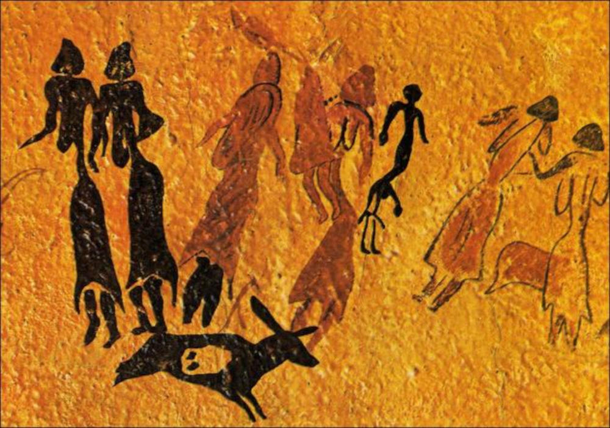
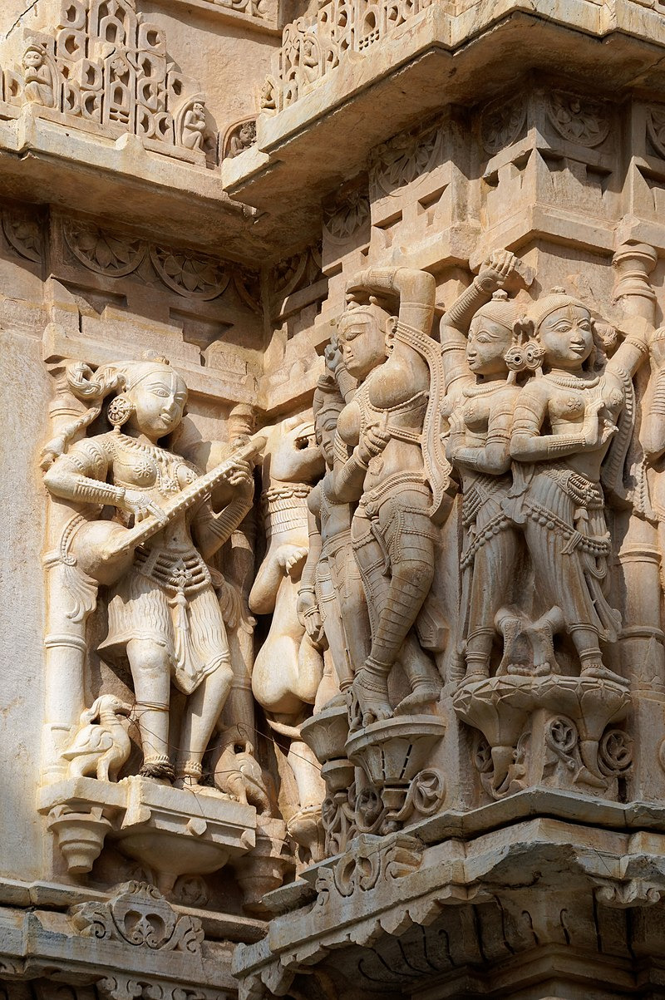

Como surgiu a música?
A música acompanha a humanidade desde os tempos mais antigos. Muito antes de existir guitarra, violão ou bateria, nossos antepassados já batiam pedras, batiam palmas e usavam a própria voz para se comunicar e criar sons. Esses primeiros ritmos eram usados em rituais, celebrações e até como forma de passar histórias de geração em geração.
Imagina só: milhares de anos atrás, alguém descobriu que podia fazer sons diferentes com ossos, flautas de bambu ou tambores de couro de animal. Assim nasceu a música como forma de expressão e união entre as pessoas.
A evolução ao longo dos séculos
Com o passar do tempo, a música foi ganhando novas formas e estilos. Na Idade Média, surgiram os primeiros registros escritos de músicas, principalmente ligados à religião. Mais tarde, no Renascimento e no Barroco, apareceram grandes nomes como Bach e Vivaldi, que mostraram como a música poderia ser complexa e emocionante.
O século XIX trouxe compositores como Beethoven e Chopin, que transformaram a música em algo ainda mais profundo e cheio de emoção. Já no século XX, tudo mudou de novo: nasceu o jazz, o rock, o pop e tantos outros estilos que até hoje fazem parte da nossa vida.
A música nos dias atuais
Hoje, a música está em todo lugar: no celular, nos fones de ouvido, nas festas, nos jogos e até nas redes sociais. A tecnologia transformou a forma como a gente ouve e cria sons. Agora, qualquer pessoa pode gravar, produzir e compartilhar suas músicas com o mundo inteiro sem sair de casa.
E o mais legal é que a música continua mudando o tempo todo. Do rap ao k-pop, do sertanejo ao eletrônico, sempre tem algo novo surgindo e conquistando multidões.